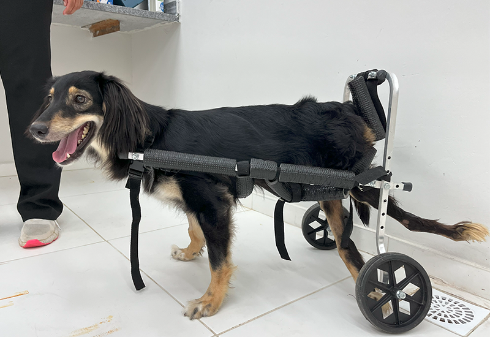

Marcia e o Resgate
Marcia, uma cadelinha resgatada da rua, encontrou uma família que a ama e agora ajuda a conscientizar sobre adoção.

Luna, A cadela Terapeuta
Luna ajuda crianças em hospitais, levando alegria e conforto através de seu carinho e energia positiva.

Felix e a Superação
Felix superou um acidente grave e hoje inspira outras pessoas a cuidarem com amor e paciência de seus pets.

Bella e a Amizade Inesperada
Bella, a gata curiosa, fez amizade com um coelho e mostra que amizades verdadeiras podem surgir de forma inesperada.